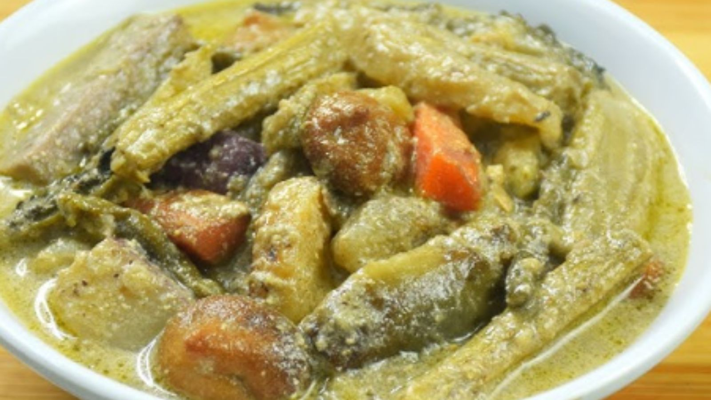

Shukto

Description
Shukto is a mixed veg dish that is consumed a th the start of a meal in many househlds of West Bengal.
Since it is a mixed veg dish, the ingredients generally vary in different seasons and different regions.
Ingredients
- Potato 8 pieces sliced
- Sweet potato 6 pieces sliced
- Green banans 2 pieces
- Eggplant 2 cubed
- Drumstick 2
- Bitter gourd 4 pieces sliced
- Lentil dumplings 10
- Coconut milk
- Cooking oil 20 g
- Pannch phoron 5 g
- Salt 20 g
Steps
- Heat the oil in a pot and fry potatoes, eggplant, and sweet potato one by one.
- Fry the lentil dumplings.
- Add paanch phoron in the oil.
- Add all the vegetables and cook. Add the salt.
- Add the coconut milk and boil.
- Add the lentil dumplings before serving.